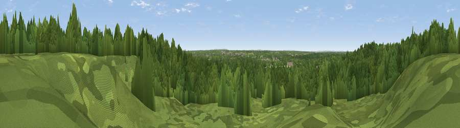

Viewpoint near Finchampstead
#45045 in England · top 75% of its area beats it · near FinchampsteadWhere it is
The exact computed spot (SU 80909 63304). Click the marker for map links.
The view, rendered

A 360° render of this exact spot computed from the terrain model, tree cover and land cover — summer colours, afternoon light, calibrated against photographs of famous viewpoints. Real trees, hedges and buildings will differ in detail.
The panorama
Grey silhouette: terrain skyline in each direction (720 bearings, Earth curvature and refraction included). Dashed green: skyline with trees (+15 m) and buildings (+8 m) as obstacles. Blue strip: how far the ground is visible on each bearing.
Where the view opens
Wedge length = distance to the farthest visible ground on that bearing (vegetation-aware). Rings at 10, 25 and 50 km.
What fills the view
80% woodland · 13% grassland · 3% built-up · 3% water · 1% cropland
Angular shares of the visible panorama (visual magnitude), not map area. Landscape diversity 0.31 (0–1 Shannon).
Key numbers
More beautiful places nearby
The staircase of upgrades: each row has a higher view potential than everything closer. Driving times are estimates from straight-line distance, calibrated against real road routing — check an actual route before setting out.
| Place | Direction | Drive | Score |
|---|---|---|---|
| Viewpoint near Finchampstead | WNW · 2 km | ~5 min | 28.7 |
| Viewpoint near Crowthorne | E · 3 km | ~7 min | 38.3 |
| High Curley Hill | E · 10 km | ~20 min | 38.5 |
| Viewpoint near Ewshot | S · 13 km | ~24 min | 46.4 |
| Viewpoint near Upper Hale | S · 13 km | ~24 min | 46.8 |
| Horsedown Common | SSW · 16 km | ~28 min | 54.8 |
| Viewpoint near Streatley | NW · 28 km | ~45 min | 57.2 |
| Viewpoint near Hannington | WSW · 29 km | ~46 min | 61.0 |
51.36305, -0.83927 · source: osm viewpoint · position refined by local search. Computed location — check access rights before visiting.